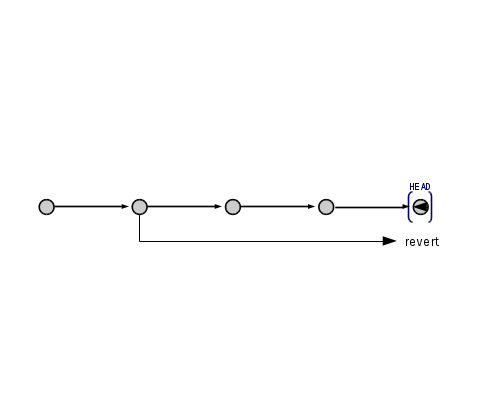
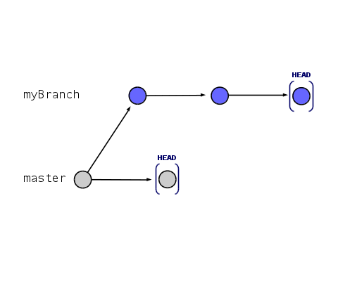

1-2History and Branching1-2History and Branching
1-2History and Branching1-2History and BranchingOne of the key aspects to version control is that you are, well, able to control the version of your software.
For example, if you make a commit that you later discover breaks the code, it is important that you be able to go back into your project's history and undo that change.
Git provides a number of tools that you can use to this effect (one of which, git reset, you have already been exposed to).
In addition to that, git provides another feature for which it is well-known: branching. In addition to history management, this lesson will teach you what branching is all about, how it is related to history, and how to effectively use branches in your project.
As you make commits to your repository, git adds each commit to the repository's history. You have full access to the repository's history, and you can use it to your advantage when something goes wrong.
To visualize how git handles history, we use branch diagrams, which are arguably the most commonly used (and most helpful) diagrams associated with git.
A branch diagram may look something like this:

In this diagram, each dot represents a commit. Every horizontal arrow represents a new commit being made. Every diagonal arrow represents a merge.
However, for now, we're just going to look at how history works, so we're going to ignore merge commits for the moment.
Every git repository (more specifically, every branch) has a pointer
(yes, even now you won't escape from pointers, although this time you only need to understand how it works)
called HEAD. It basically is just how git refers to the latest commit.
Each commit is parented by the commit that immediately precedes it.
When you make a commit, the HEAD pointer moves from the new commit's parent to the new commit.
Assuming that you continue to develop on this branch without any merge issues (i.e. development on your own), you will create a string of commits,
each parented by the last, with HEADpointing at the last commit you made.
At some point, you may realize that one or more of the changes you made in a commit in your history is incorrect, so you will want to go back in the history of your project to either fix or undo that change.
This is done through either a git reset or a git revert, depending on the situation.
You were acquainted with this operation in the last lesson. Basically, what it does is reset the state of the repository to the state at a specified commit.
git reset is useful when you have recently made a commit which you wish to undo, and you haven't pushed the commit yet.
When referring to a repository's history, a git reset will move the HEAD pointer back to the specified commit, effectively deleting all of the commits that follow.
Because of this, it is important to note that it is not possible to do a reset to only undo a change in a commit that has already been buried in the repository's history.
All reset operations will undo all changes from the previous location of HEAD until the commit given to git reset.
However, you may find yourself in a situation where you want to undo a commit that has already been pushed to the remote repository, or you want to undo changes only from one commit, and that commit has since parented newer commits.
In this case, the tool you want to use is git revert. Unlike git reset, git revert does not move the HEAD pointer back.
Instead, it analyzes the commit that you want to undo and then makes another commit that is effectively the reverse of the commit you specified.
Because of how the revert function works, you can actually only undo one commit at once. It is possible to tell git to revert a series of commits, but you have to review the commit log for each individual revert.
One of the important things to know about a revert is that you can run into issues when you try to revert a commit that has more than one parent (i.e. a merge commit). Exactly how this happens will be discussed in greater detail in the Branching section, but it is important to note at this point that, in this situation, you need to tell git which parent to revert to.
Unlike reset, revert allows you to undo only the changes done in one commit, leaving the changes done by following commits intact.
However, it is important to note that when you revert only one commit already buried in history, you can be breaking code that was pushed in later commits, as that commit may have provided a function in later commits.
In this case, the idea would be to do a partial revert, where you tell git only to revert certain lines in the commit diff.
One of git's most well-known features is its ability to create branches. Effectively, branches allow you to create another copy of the code directly in the repository, which you can work on independently of the main development effort. Each branch has its own development history, and remains completely separate from the other branches until you are ready to move your work back into mainstream development (via — you guessed it — a merge).
If you have even looked at a git repository, you have likely already seen evidence of branches — even if the repository itself does not make extensive use of them.
Every git repository has a base branch that represents the mainstream course of development, which is almost always named master. Under most circumstances, most branches branch off from the master branch, or branch from another branch that itself was branched from master.
Under normal circumstances, a branch operation will create a new branch using the code presently under HEAD. You can name a new branch anything that has not already been taken, although it is advised to make the branch's name descriptive of its purpose.
Each branch has its own HEAD pointer that points at its latest commit.
Once the new branch has been made, development on both branches can continue completely independently of each other.
The great thing about branching is that it allows a whole bunch of people to work on their own part of the code without interfering with each other at all — all within the same repository. This sounds great, but how do you keep all of your work on your branch?
In a way, git takes care of this for you. However, you have to tell git which branch you want to commit to.
In your local copy's working directory, git will keep one (and only one) branch checked out. This will make your working directory effectively at the HEAD of the branch that is checked out.
So, if you want to switch to and start working on another branch, you must checkout that branch first.
A checkout is a fairly simple operation — git modifies all of the tracked files in the working directory to match the HEAD state of the desired branch.
As simple as on operation this may seem, it is actually possible for it to fail if you are not paying enough attention. If you have uncommitted changes on a branch, then git will refuse to checkout another branch, as proceeding with the checkout would cause you to lose all of your changes.
To fix this, you have three options:
HEAD, effectively undoing all of the changes that you have made since the last commitNow what is stashing, you ask?
Let's back up for a moment: you want to switch branches, but you have made work that you don't want to lose, but don't feel ready to commit yet. In this case, you would use the stash.
The stash stores quasi-commits that you want to apply to the working tree at a later time. Each stash operation stores a diff on the stash, but unlike normal commits, stash commits do not require that you leave a message (they are usually used to remind you what is contained in the stash).
Once on the stash, a particular set of changes is in limbo
. It is not a part of any developmental history on any branch, and is not associated with any branch to begin with.
Git stores the changes internally, and waits for you to re-apply them to the working tree.
When you are ready to unstash changes, you perform a stash pop. This removes the desired set of changes from the tree and applies them to the working directory. These changes then become unstaged changes on the current branch.
You do need to be careful when you perform a git stash pop, however. Performing a stash pop is effectively like a merge — you can still end up with merge conflicts.
One of the other useful things the stash can be used for is to move unstaged changes between branches. If you start working on the code and realize that you're on the wrong branch when it comes time to commit, all is not lost. Instead, simply stash your changes, switch branches, and then pop your changes off the stash onto the new branch, and voilà — you are ready to commit your changes to the correct branch.
If you remember from the last lesson, a merge was used when the local commit history differed from that on the remote server.
Since a branch intentionally causes the development history to divert, in order to bring the changes from a branch into another branch (such as master), you need to merge that branch into the branch you wish to bring the changes into.
Because of how git merge works, you need to be on the branch you wish to merge into to start the operation. Then, when you set up the merge, you tell git which branch you want to merge from. Then you tell it to merge.
At this point, git will attempt to automatically merge the branches. It will analyze the HEAD of both branches to determine what is different between the two, and build a diff that effectively incorporates both sets of changes.
However, unless the development on the branch you are merging into has been stale since the branch you are merging from was updated, you are highly likely to run into merge conflicts
No problem, just open up the tool you use to resolve merge conflicts, mark them as resolved. Make sure to commit the result.
Unlike most commits, however, a merge commit results from the analysis of two commits that immediately precede it, and as such, that commit has two parent commits — the HEAD commits on the branches that were merged together.
It is important to note that, once a branch has been merged into another branch, that branch still remains. Every branch you create will remain in the repository until you (or someone else) explicitly deletes it.

| ← 1-1 Git Basics | 1-2 History and Branching | Chapter 2: Use → |